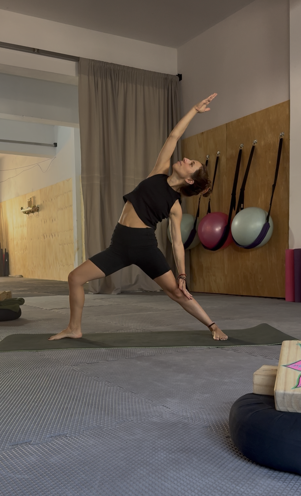

Bienestar • Conciencia • Relajación
El método para aliviar tensiones y recuperar tu cuerpo
Una propuesta de bienestar integral a cargo de Belén González.

Las clases de Stretching están guiadas por Belén González, profesora de Hatha Yoga y Meditación. Con un profundo recorrido en el estudio del movimiento y la danza, su enfoque combina la conciencia corporal con técnicas de Mindfulness y Coaching.
Durante la mañana, Belén te guiará en un proceso de mejora de la movilidad y conciencia plena, preparando a tu cuerpo para el resto del día y fomentando el buen descanso nocturno.
Espacio de Bienestar - Sede Lanús
Clases Regulares
Viernes a las 10:30 HS
Clase de prueba por única vez: $20.000
* Importante: Si abonas la clase de prueba y decides confirmar el cupo mensual dentro del mes, el valor de la prueba se toma como parte de pago de la mensualidad.
Navega y elegí la opción que mejor se adapte a tu objetivo
Guiado por Belén González
Enfoque en relajación, disminución del estrés, mejora del descanso y movilidad suave guiada.
Viernes 10:30 HS
Ver detalleTerapéutico & Dinámico
• Terapéutico: Orientado a todas las edades y patologías o dolencias físicas.
• Dinámico: Para quienes entrenan fuerte (HIIT, Calistenia y deportes).
Consultar turnos
Ver detalleMejora de la postura
Enfoque integral y dinámico para el equilibrio postural.
Martes y Jueves 14:00 HS
Ver detalle